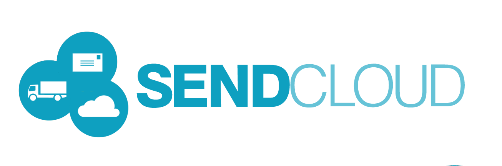
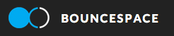

Rails Girls finally comes to Eindhoven!
During the free workshop we will learn to use Ruby on Rails to build a web application together, from scratch.
ATTENTION: The venue has changed last-minute.
You learn designing, prototyping and coding with the help from our coaches.
You need your own laptop, curiosity and a sprinkle of imagination!
Want to help? We are looking for sponsors, volunteers and Rails coaches! Shoot us an mail.
| 18.00 - 20:00 |
Installation partyGet to know the other girls and coaches a little bit beforehand. We’ll also install Ruby on Rails on your computer, so bring your laptop with you. |
|---|
| 09:30 - 10:00 |
Registration and coffee |
|---|---|
| 10:00 - 10:30 |
BentoboxWe will teach you some 'tech talk', using the Bentobox exercise. |
| 10:30 - 12:30 |
Hands-on, minds-on learning!Rails Girls workshop includes learning the first steps into software craftmanship, creating a fun app, in small teams. |
| 12:30 - 13:30 |
LunchProvided by De Pistolet from Son en Breugel, thanks to our awesome sponsors! |
| 13:30 - 14:00 |
Lightning talks! |
| 14:00 - 16:30 |
Second part of the workshop |
| 16:30 |
Wrap-up |
Location: SendCloud / BounceSpace Bogert 1, 5612 LX, Eindhoven
Please contact us if you'd like to support Rails Girls Eindhoven.
Kabisa is the market leader in Ruby on Rails development in the Netherlands. You too, can learn Ruby on Rails from our professional trainers with years of Rails experience and start writing software in a quicker, better and more enjoyable way too. With their personal attention and experience, you’ll acquire both the fundamental knowledge and necessary skills to start your own projects with Ruby on Rails.
 SendCloud is an online solution that connects webshops to shipping carriers in order to simplify the shipping process. The platform gives an overview of all the shipments, sends track-trace mails to the end-clients and saves time and money for the webshop owner. Recently SendCloud started to use Python/Django for most of the development related tasks. They are happy to support the RubyGirls community by providing a room in their office building.
 BounceSpace 040 The office, but different. We believe in a new kind of office: a creative, slightly rebellious and community-based workspace housing talented and ambitious freelancers, startups and enterprises.
 GitHub is the best place to share code with friends,
co-workers, classmates, and complete strangers. Over three million people use GitHub to build amazing things
together. We <3 you, GitHub!
GitHub is the best place to share code with friends,
co-workers, classmates, and complete strangers. Over three million people use GitHub to build amazing things
together. We <3 you, GitHub!
Questionmark is an independent organisation that collects product information and converts it to a scientifically based rating that says something about a product’s sustainability in the areas of public health, environment, human rights, and animal welfare. These ratings and other background information is made publicly accessible by means of a mobile app, website and API. Questionmark's mission is to help consumers make informed choices and catalyse a competition for sustainability among producers.
Gitlab is open source software to collaborate on code. Manage git repositories with fine grained access controls that keep your code secure. Perform code reviews and enhance collaboration with merge requests. Each project can also have an issue tracker and a wiki. Used by more than 50,000 organizations, GitLab is the most popular solution to manage git repositories on-premises. And on GitLab Cloud you can host unlimited public and private repositories for free.
YouMagine YouMagine is the go to place to find and share designs and ideas for 3D printing and collaborate on them with a great community. It enables users to upload ideas, both rough drafts and final concepts, and have other users build on them, create them, or remix them to their own styles. YouMagine is a "printer agnostic" platform that is dedicated to open-source ideas Consider it the “Github of 3D printing”.
Salves is een IT-bedrijf dat staat voor innovatieve en gedegen softwareontwikkeling, professionele testtrajecten en integrale implementatie van nieuwe software met als doel het behalen van een maximale business productiviteit bij onze klanten. Daarbij zijn oplossingen die in samenhang worden ontworpen in onze optiek beter. Wij zien de oplossing dan ook in multidisciplinair denken en handelen vanuit vier disciplines:Testen, Software Development, Microsoft Consultancy en AFAS Profit Consultancy.
Shopalike.nl is een online shopping center waar bezoekers producten kunnen vinden van 520+ winkels, waaronder Zalando, Hugo Boss en WE Fashion. Niet alleen kleren zijn te vinden op Shopalike, maar ook tuingerief, meubels, en cosmetica.
How much does the workshop cost? Nothing, it's free! You just need to be excited!
Who is this aimed for? People of any gender, of any background, of any age with basic knowledge of working with a computer. Please bring your laptop.
Can men attend? Yes. Rails Girls Eindhoven aims to be a friendly and welcoming place to everyone wanting to learn programming.
I know how to program - how can I help? We’re also looking for people to be coaches. We’ll all get together before the event to walk through the program we'll be delivering. Email us